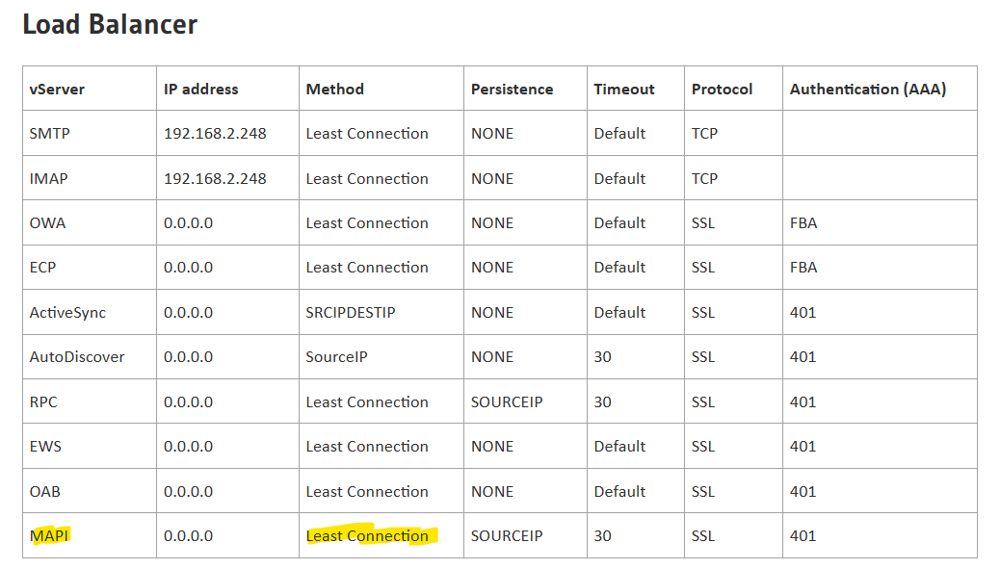

Graph and PowerShell Blog
Graph and PowerShell BlogA recent issue I came across appeared to happen at random times during the working week where Outlook clients would be disconnected for up to 30 minutes before returning to normal. As the issue seemed to only occur after a patching cycle the focus at first was on what was in the those patches and was there an incompatibility with Outlook. After chasing a few leads, I eventually narrowed down the issue with the help of the HTTP_Err logs (c:\Windows\System32\LogFiles\HTTPERR) that are never truncated.
Within these logs we could see a 400.2 error, which translates to queue full. So it appeared that after four years of running Exchange 2016 we were hitting a new limit on the system. With the help of a script I was able to setup my own PowerShell script to monitor the number of MAPI connections we were receiving and it soon became clear that when the connections were hitting 4,000 that the queue limit would be reached. The app pool limit is set to 1,000 by default, so I looked into see if this could be increased, but as per this article increasing the queue size is unlikely to fix the issue.
↑ Lots of IIS 400.2 errors - Connection_Dropped_List_Full.
What was also happening when the queue reached it's limit is that the NetScaler load balancer was failing over, the heartbeat relies on a 200 response from accessing https://
↑ Mapi connections nearly all go to one of the two active nodes. When connections get to around 4,000 the queue is full and the Netscaler will fail-over.
We now had an understanding of the problem but one question remained, with two active servers in the AD Site why were all the client connections going to one server and not load balanced as they were meant to be. The NetScaler had been setup using best practices, but still we could see that 99% of the MAPI connections were going to one server. We opened a support call with Citrix and eventually got speaking to the right engineer, he explained that we had to choose 'Round Robin' and not 'Least Connection' as shown on some guides for setting up NetScaler.

↑ Guides say to use 'Least Connection' but actually we need 'Round Robin' here to distribute the traffic.
After we made the change we now see the connections evenly distributed and we no longer see the queue full error messages on IIS.
↑ Mapi connections spread evenly across both servers.
Update: despite balancing the NetScaler the Outlook disconnects still occurred. After a support call with Microsoft we decided to remove the NetScaler and instead use DNS round robin for load balancing. After this the issue was finally resolved.